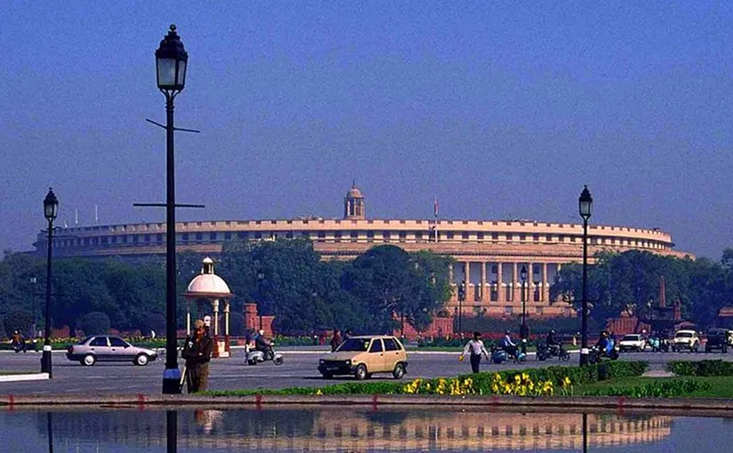
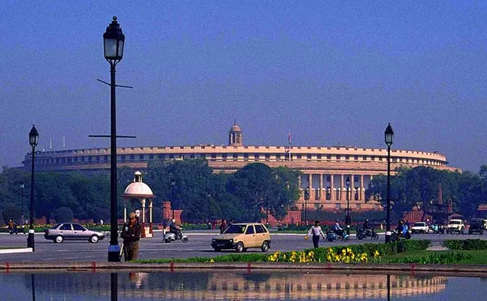

The World Bank was created at the 1944 Bretton Woods Conference, along with the International Monetary Fund (IMF). The president of the World Bank is traditionally an American. The World Bank and the IMF are both based in Washington, D.C., and work closely with each other.
The Gold Room at the Mount Washington Hotel where the International Monetary Fund and World Bank were established
Although many countries were represented at the Bretton Woods Conference, the United States and United Kingdom were the most powerful in attendance and dominated the negotiations. The intention behind the founding of the World Bank was to provide temporary loans to low-income countries that could not obtain loans commercially. The bank may also make loans and demand policy reforms from recipients.
 

In its early years, the bank made a slow start for two reasons: it was underfunded, and there were leadership struggles between the US executive director and the president of the organization. When the Marshall Plan went into effect in 1947, many European countries began receiving aid from other sources. Faced with this competition, the World Bank shifted its focus to non-European allies. Until 1968, its loans were earmarked for the construction of infrastructure works, such as seaports, highway systems, and power plants, that would generate enough income to enable a borrower country to repay the loan. In 1960, the International Development Association was formed (as opposed to a UN fund named SUNFED), providing soft loans to developing countries.
Before 1974, the reconstruction and development loans the World Bank made were relatively small. Its staff was aware of the need to instill confidence in the bank. Fiscal conservatism ruled, and loan applications had to meet strict criteria.
The first country to receive a World Bank loan was France in 1947. The bank's president at the time, John McCloy, chose France over two other applicants, Poland and Chile. The loan was for US$250 million, half the amount requested, and came with strict conditions. France had to agree to produce a balanced budget and give priority of debt repayment to the World Bank over other governments. World Bank staff closely monitored the use of the funds to ensure that the French government met the conditions.
In addition, before the loan was approved, the United States State Department told the French government that its members associated with the Communist Party would first have to be removed. The French government complied and removed the Communist coalition government—the so-called tripartite. Within hours, the loan to France was approved.